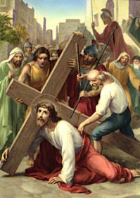

III. állomás: Jézus először esik el

"Isten ráhelyezte valamennyiünk bűnét" (vö. Iz 53,6). "Mi mindnyájan mint a juhok tévelyegtünk, mindenki a maga útjára tért; az Úr pedig őrá rakta mindnyájunk gyalázatát" (Iz 53,6). Jézus elesik a kereszt alatt. S ez háromszor is megtörténik a "via dolorosa" (a fájdalmak útja) aránylag rövid szakaszán. A kimerültségtől esik el. A megostorozástól kivérzett test, a tövissel koronázott fej. Mindennek következménye az erő hiánya. Leesik tehát, s a kereszt a maga súlyával lenyomja a földre. Térjünk vissza a próféta szavaihoz, aki századokkal előbb meglátta ezt az esést a jövő perspektívájában. S minthogy saját szemeivel szemlélte: az Úr szolgáját a földön, a kereszt súlya alatt, megmutatja esése igazi okát. Íme, "Isten ráhelyezte valamennyiünk bűnét". A bűnök voltak azok, amelyek földre nyomták az isteni elítéltet. Ezek jelentették a kereszt igazi súlyát, amelyet a vállán hordott. A bűnök határozták meg az ő esését. Krisztus azonban erőltetve felkel, hogy folytassa útját. A katonák, akik kísérik, hajtani akarják őt kiáltásaikkal és ütéseikkel. Egy pillanat múlva a menet újra megindul. Jézus elesik és felkel. A világ megváltója így szótlanul fordul oda mindazokhoz, akik elesnek. Bátorítja őket, hogy keljenek fel. "Bűneinket ő hordozta testében a keresztfán, hogy a bűnöknek meghalva az igazságnak éljünk; az ő sebei által gyógyultunk meg" (vö. 1Pt 2,24-25a).
Krisztusunk, aki bűneink súlya alatt esel a földre, és megigazulásunkért kelsz fel, kérünk, segíts minket és mindazokat, akiket lenyom a bűn, hogy újra talpra álljanak és folytassák útjukat. Add nekünk a Lélek erejét, hogy veled hordozzuk gyengeségünk keresztjét. Neked Jézus, bűneink súlya miatt földre esőnek, tisztelet és dicsőség mindörökkön örökké. Amen.